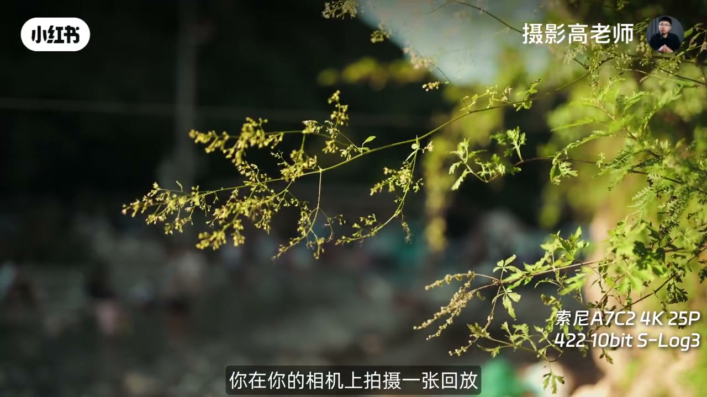
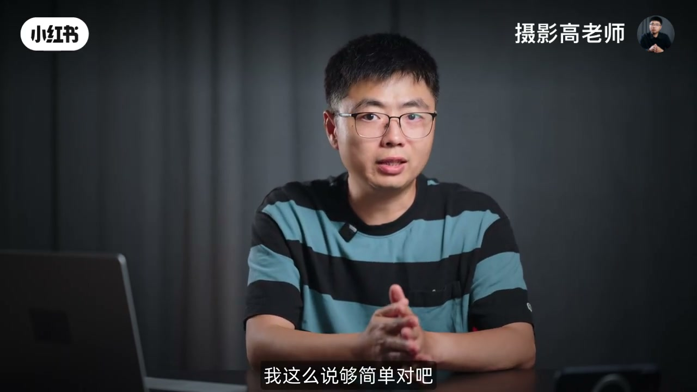
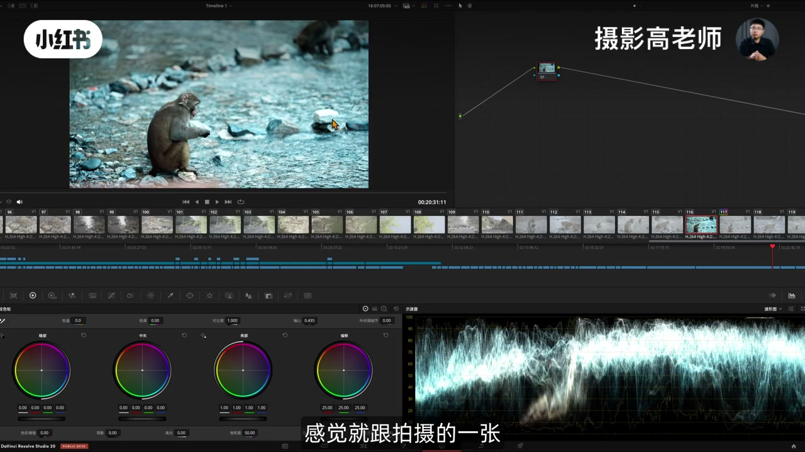
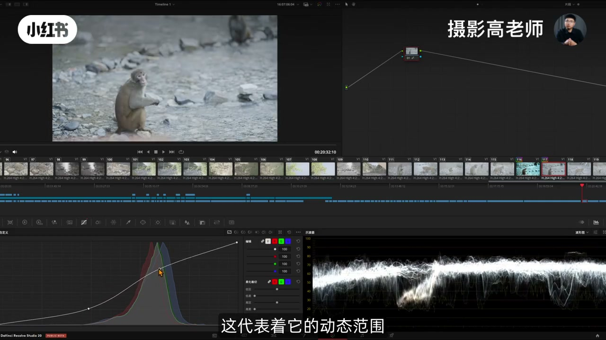
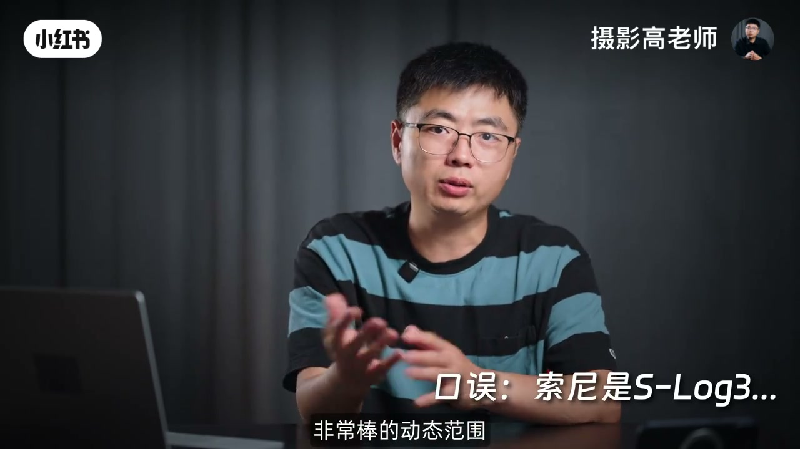
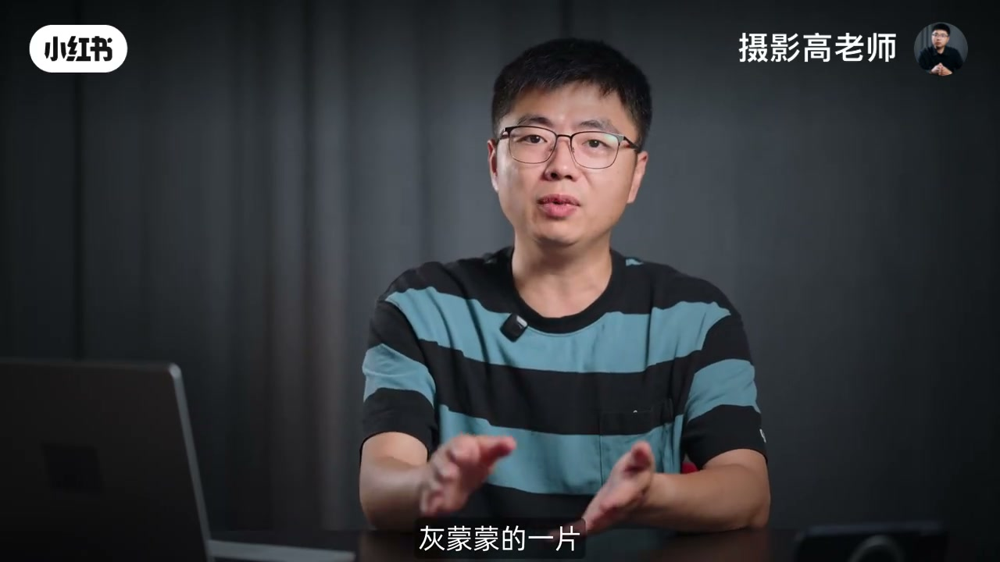
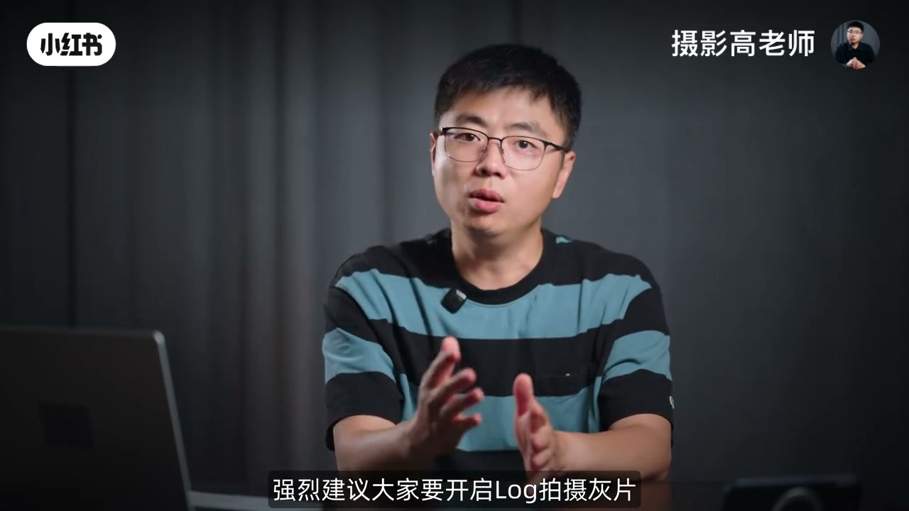
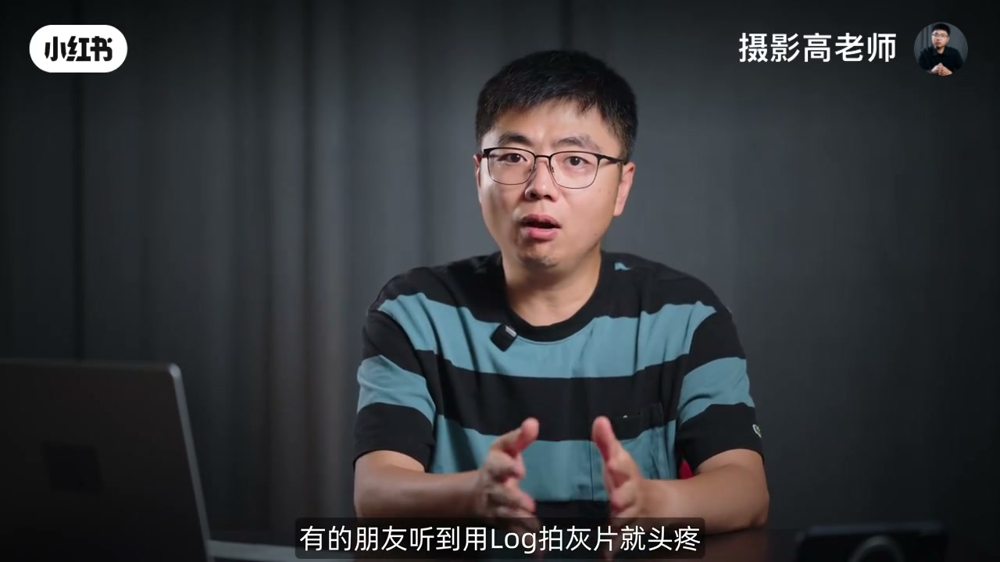

内容要点
「05从零玩转视频创作 为什么要开Log拍灰片」教程要点：你要是懶成这样的话 → 咱们也就你这你也别看了好吧 → 这个 → 好的各位朋友大家好；详见正文。
知识结构
你要是懶成这样的话
那其实上周末带娃去玩水
F-Log2C
- 你要是懶成这样的话
- 咱们也就你这你也别看了好吧
- 这个
- 好的各位朋友大家好
- 欢迎来到高老师新的一期视频
你要是懶成这样的话
00:00–02:30你要是懶成这样的话
你要是懶成这样的话；咱们也就你这你也别看了好吧；这个；好的各位朋友大家好；欢迎来到高老师新的一期视频；那今天我们继续来聊那个系列；从零开始完撰视频创作；今天我们来聊一聊log；来聊一聊灰片；为什么我们需要在拍摄视频的时候；拍摄灰片的模式；跟大家简单的解释一下；就是我们在正常的拍摄照片的时候；那如果说你拍Go加RAW；RAW加JPEG的时候；你在你的相机上拍着一张回放；看到的照片是GoPG；对不对；是JPEG；它的反差；它的色彩都还是非常讨喜的；但是如果说你想要精细的调整；后期你一定会把那张RAW的格式的原始照片；拖动到你的调色软件里面；比如说Lightroom里面；去调整这张RAW的照片；那你肯定不会选择去调这张JPEG的照片；对不对；为什么呢；因为JPEG它是8比特的；它的这个空间调色空间；以及这种明暗的宽容度的空间；后期已经很小了；而那张RAW格式的照片14比特；那非常丰富的色彩信息；14档15档的动态范围；你后期可以调整的空间是非常大的；那拍照的JPEG和RAW格式的区别；大家我相信已经了然于胸了；对不对；那么拍视频的时候；那开启Log拍摄灰片；简单的来说；我们类比一下；就相当于你拍摄的是RAW格式的视频；那后期拥有更大的调整空间；我这么说够简单对吧；那当然有朋友说了；哎呀你这个不是RAW；因为正儿八经的很多相机；它是可以支持拍摄；比如说4KRAW视频内录；8KRAW视频内录；那个才是真正的RAW；你这个灰片不是RAW；我还用你说吗朋友；咱；我当然懂这个了；但是我这不是想要通俗的；跟大家讲解这个事情吗；对不对；你拍摄RAW格式的视频；那后期的流程其实会更加的麻烦；相对而言；目前整个拍摄Log灰片的；后期调色的流程；基本上相对固定；简单；门槛更低；那这是我为什么这么比喻的一个原因；而不是说因为高老师；你啥玩意儿不懂；你就；还是给大家举个例子


02:28–05:28那其实上周末带娃去玩水
那其实上周末带娃去玩水；突然来了两只猴；好的；这个片段就是当时在拍照模式下面；吴操作拍摄了一段视频；大家可以看到他的成像风格；画面的感觉来说；这个饱和度反差已经给到位了；感觉就跟拍摄的一张JPEG的照片是差不多的；那从播信图就能看得到；这张照片它的明暗反差已经顶天立地了；最高光已经顶到100的头了；那最底端已经几乎贴到零这个黑的起点了；这代表着什么呢；代表着它后期几乎已经没有任何可以调整的空间了；最亮的地方已经信息缺失了；那下面这个片段就是当我意识到了；这个吴操作之后；立刻切换到视频模式重新拍；那这个画面就是开启了log拍摄的一个灰片；大家可以看到播信图；它所有的明暗信息都集中在播信图的中央区域；那既没有上面顶到头；没有上面顶到头说明什么；我还可以有大量的往上提拉调整明暗的空间；而且也没有向下抵到头；下面还有这么多区域；代表着什么；我还有大量的空间可以再去调我暗部；到底哪里是最暗啊；这个曲线应该怎么调啊；我都可以随意的调；这代表着它的动态范围；明暗层次的信息保留的非常的到位；我想怎么调就怎么调；色彩比较暗淡的话；简单的稍稍调整一下；饱和度之类之类的；当然这里就跟大家示意一下；后续我们会跟大家分享灰片后期的正确的调色流程；比如说饱和度；通常我都不是这么加的；那比如说我们再加一点对比度；然后轴心；在曝光的明暗的倾向再重新调整一下；色温再调整一下；一个灰片就可以调整到你想要的效果；你调整后的这种画面的层次感；这种舒适的感觉；是要远远比你相机直接拍出来的；这个画面要好很多；对不对；而且这还远远不是这个画面调整的基线；还有大量的空间可以供你自由的发挥；这就是灰片的魅力；我使用的是索尼A71C2；索尼家的机型都是C-Log3；C-Log3在业界是非常著名的；非常棒的动态范围；非常大的后期调整空间；这一点其实现在每家都有了；就是像佳能的CanonLog3；CanonLog2；CanonLog2；东南范围；16档加；非常的哇塞；对不对；尼康的N-Log；虽然我们都在期赛他的N-Log2；但是目前配合RedLatin；其实它的可用性也要高很多了；富士家也有F-Log；F-Log2


05:26–08:52F-Log2C
F-Log2C；还有哪家；松下；对松下；V-Log；大家可以去看一看我之前评测的那个S1；M2那一期；它的V-Log我是赞赏有加的；那总之开启了Log；各家开启的方式不一样；大家看说明书；去看其他的教程；你开启了Log模式；拍摄出来的视频；它就是灰片；那灰片这个词大家一听就知道；当你在后期软件或者说是回放的时候；某些相机回放的时候；它是不套LUT的对不对；那你回放的时候看见这个视频；拍出来怎么灰不垃圾的；就是就感觉层次几乎没有；灰懵懵的一片也没有色彩；那为什么要这样处理呢；之前我们说到了；你拍照片可以拍摄RAW格式；但是每一张RAW格式的照片；体积是很大的；对不对；视频4K 25P；你每秒拍25张RAW；那这个体积就有点过于恐怖了；对不对；对于日常拍摄绝大多数的视频的需求；你不需要每一张都是RAW对吗；那开启Log拍摄灰片；就算是一种折中的技术解决方案；那它把每一帧的视频的信息；高光往下压；这个暗的阴影往上提；那集中在一个中灰的区域；相对来说呢；就可以更好的记录整个视频的明暗层次；而且呢；开启Log通常拍摄的都是4,2,2,10比特；10比特；它的这个色彩记录的空间；也要比普通的模式的8比特；8比特的JPEG要高很多；因此呢；你看压缩之后；它的动态范围又高；同时呢；它的色彩信息又丰富；你说这是不是一种RAW格式的；视频呢；对吧；因此呢；如果说你拍摄视频；那强烈建议大家；要开启Log拍摄灰片；这样你就可以得到最为宽广的后期调整空间；相当于你拍了RAW；然后后期再进行精细的调整；那对于你的视频的画面啊；感觉啊；质量啊；色彩啊；都会有极大的提升啊；那有的时候朋友听到；用Log拍灰片就头疼；对吧；我后期还得调




口述/画面要点（221段）
结合 Whisper medium 与画面大字整理；专有名词已校对。
你要是懶成这样的话
咱们也就你这你也别看了好吧
这个
好的各位朋友大家好
欢迎来到高老师新的一期视频
那今天我们继续来聊那个系列
从零开始完撰视频创作
今天我们来聊一聊log
来聊一聊灰片
为什么我们需要在拍摄视频的时候
拍摄灰片的模式
跟大家简单的解释一下
就是我们在正常的拍摄照片的时候
那如果说你拍Go加RAW
RAW加JPEG的时候
你在你的相机上拍着一张回放
看到的照片是GoPG
对不对
是JPEG
它的反差
它的色彩都还是非常讨喜的
但是如果说你想要精细的调整
后期你一定会把那张RAW的格式的原始照片
拖动到你的调色软件里面
比如说Lightroom里面
去调整这张RAW的照片
那你肯定不会选择去调这张JPEG的照片
对不对
为什么呢
因为JPEG它是8比特的
它的这个空间调色空间
以及这种明暗的宽容度的空间
后期已经很小了
而那张RAW格式的照片14比特
那非常丰富的色彩信息
14档15档的动态范围
你后期可以调整的空间是非常大的
那拍照的JPEG和RAW格式的区别
大家我相信已经了然于胸了
对不对
那么拍视频的时候
那开启Log拍摄灰片
简单的来说
我们类比一下
就相当于你拍摄的是RAW格式的视频
那后期拥有更大的调整空间
我这么说够简单对吧
那当然有朋友说了
哎呀你这个不是RAW
因为正儿八经的很多相机
它是可以支持拍摄
比如说4KRAW视频内录
8KRAW视频内录
那个才是真正的RAW
你这个灰片不是RAW
我还用你说吗朋友
咱
我当然懂这个了
但是我这不是想要通俗的
跟大家讲解这个事情吗
对不对
你拍摄RAW格式的视频
那后期的流程其实会更加的麻烦
相对而言
目前整个拍摄Log灰片的
后期调色的流程
基本上相对固定
简单
门槛更低
那这是我为什么这么比喻的一个原因
而不是说因为高老师
你啥玩意儿不懂
你就
还是给大家举个例子
那其实上周末带娃去玩水
突然来了两只猴
好的
这个片段就是当时在拍照模式下面
吴操作拍摄了一段视频
大家可以看到他的成像风格
画面的感觉来说
这个饱和度反差已经给到位了
感觉就跟拍摄的一张JPEG的照片是差不多的
那从播信图就能看得到
这张照片它的明暗反差已经顶天立地了
最高光已经顶到100的头了
那最底端已经几乎贴到零这个黑的起点了
这代表着什么呢
代表着它后期几乎已经没有任何可以调整的空间了
最亮的地方已经信息缺失了
那下面这个片段就是当我意识到了
这个吴操作之后
立刻切换到视频模式重新拍
那这个画面就是开启了log拍摄的一个灰片
大家可以看到播信图
它所有的明暗信息都集中在播信图的中央区域
那既没有上面顶到头
没有上面顶到头说明什么
我还可以有大量的往上提拉调整明暗的空间
而且也没有向下抵到头
下面还有这么多区域
代表着什么
我还有大量的空间可以再去调我暗部
到底哪里是最暗啊
这个曲线应该怎么调啊
我都可以随意的调
这代表着它的动态范围
明暗层次的信息保留的非常的到位
我想怎么调就怎么调
色彩比较暗淡的话
简单的稍稍调整一下
饱和度之类之类的
当然这里就跟大家示意一下
后续我们会跟大家分享灰片后期的正确的调色流程
比如说饱和度
通常我都不是这么加的
那比如说我们再加一点对比度
然后轴心
在曝光的明暗的倾向再重新调整一下
色温再调整一下
一个灰片就可以调整到你想要的效果
你调整后的这种画面的层次感
这种舒适的感觉
是要远远比你相机直接拍出来的
这个画面要好很多
对不对
而且这还远远不是这个画面调整的基线
还有大量的空间可以供你自由的发挥
这就是灰片的魅力
我使用的是索尼A71C2
索尼家的机型都是C-Log3
C-Log3在业界是非常著名的
非常棒的动态范围
非常大的后期调整空间
这一点其实现在每家都有了
就是像佳能的CanonLog3
CanonLog2
CanonLog2
东南范围
16档加
非常的哇塞
对不对
尼康的N-Log
虽然我们都在期赛他的N-Log2
但是目前配合RedLatin
其实它的可用性也要高很多了
富士家也有F-Log
F-Log2
F-Log2C
还有哪家
松下
对松下
V-Log
大家可以去看一看我之前评测的那个S1
M2那一期
它的V-Log我是赞赏有加的
那总之开启了Log
各家开启的方式不一样
大家看说明书
去看其他的教程
你开启了Log模式
拍摄出来的视频
它就是灰片
那灰片这个词大家一听就知道
当你在后期软件或者说是回放的时候
某些相机回放的时候
它是不套LUT的对不对
那你回放的时候看见这个视频
拍出来怎么灰不垃圾的
就是就感觉层次几乎没有
灰懵懵的一片也没有色彩
那为什么要这样处理呢
之前我们说到了
你拍照片可以拍摄RAW格式
但是每一张RAW格式的照片
体积是很大的
对不对
视频4K 25P
你每秒拍25张RAW
那这个体积就有点过于恐怖了
对不对
对于日常拍摄绝大多数的视频的需求
你不需要每一张都是RAW对吗
那开启Log拍摄灰片
就算是一种折中的技术解决方案
那它把每一帧的视频的信息
高光往下压
这个暗的阴影往上提
那集中在一个中灰的区域
相对来说呢
就可以更好的记录整个视频的明暗层次
而且呢
开启Log通常拍摄的都是4,2,2,10比特
10比特
它的这个色彩记录的空间
也要比普通的模式的8比特
8比特的JPEG要高很多
因此呢
你看压缩之后
它的动态范围又高
同时呢
它的色彩信息又丰富
你说这是不是一种RAW格式的
视频呢
对吧
因此呢
如果说你拍摄视频
那强烈建议大家
要开启Log拍摄灰片
这样你就可以得到最为宽广的后期调整空间
相当于你拍了RAW
然后后期再进行精细的调整
那对于你的视频的画面啊
感觉啊
质量啊
色彩啊
都会有极大的提升啊
那有的时候朋友听到
用Log拍灰片就头疼
对吧
我后期还得调